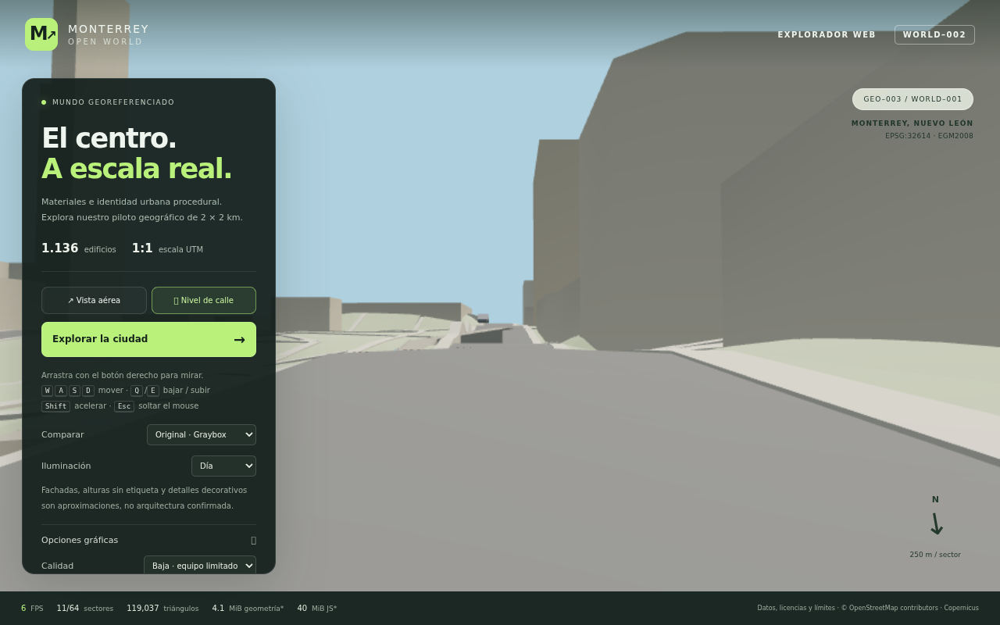
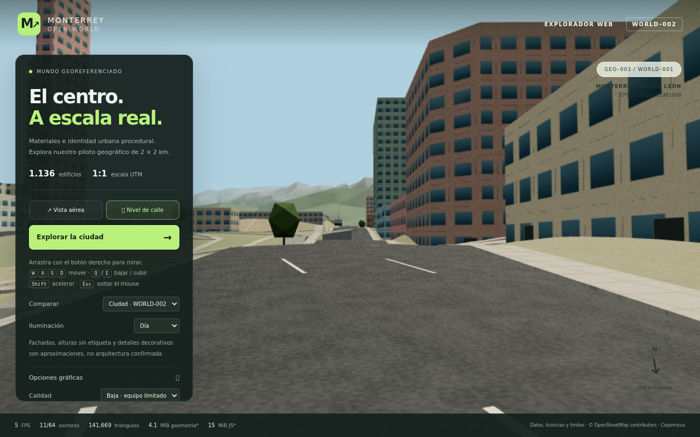
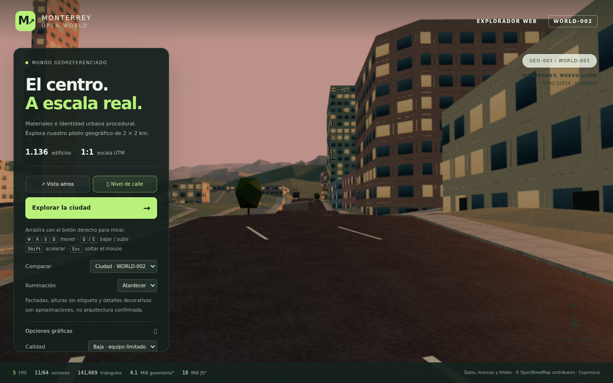
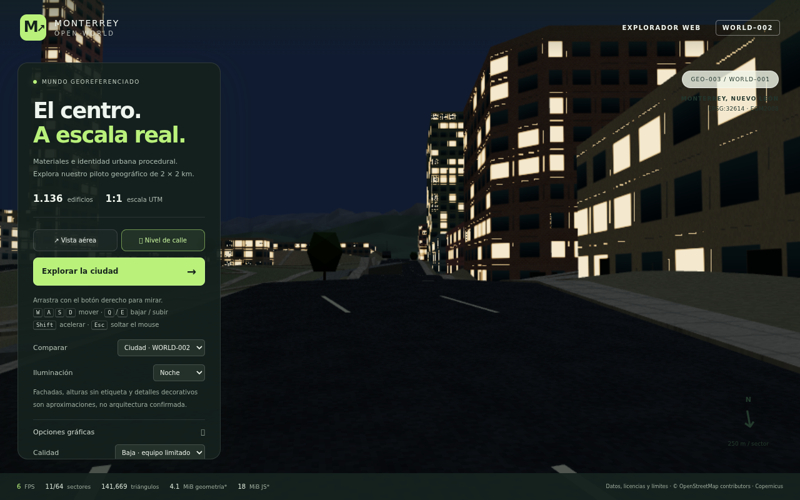
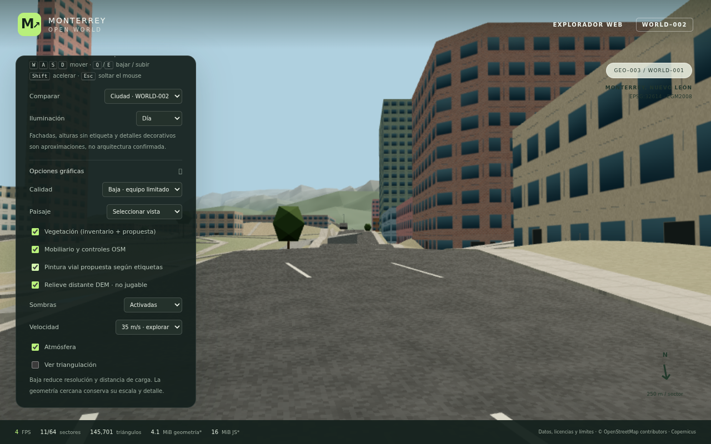
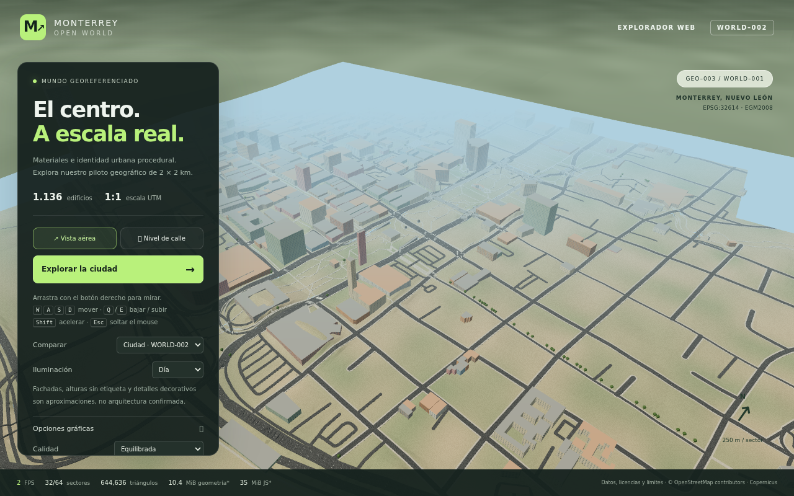
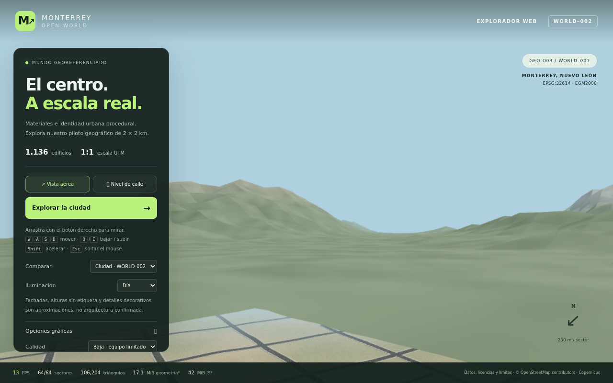
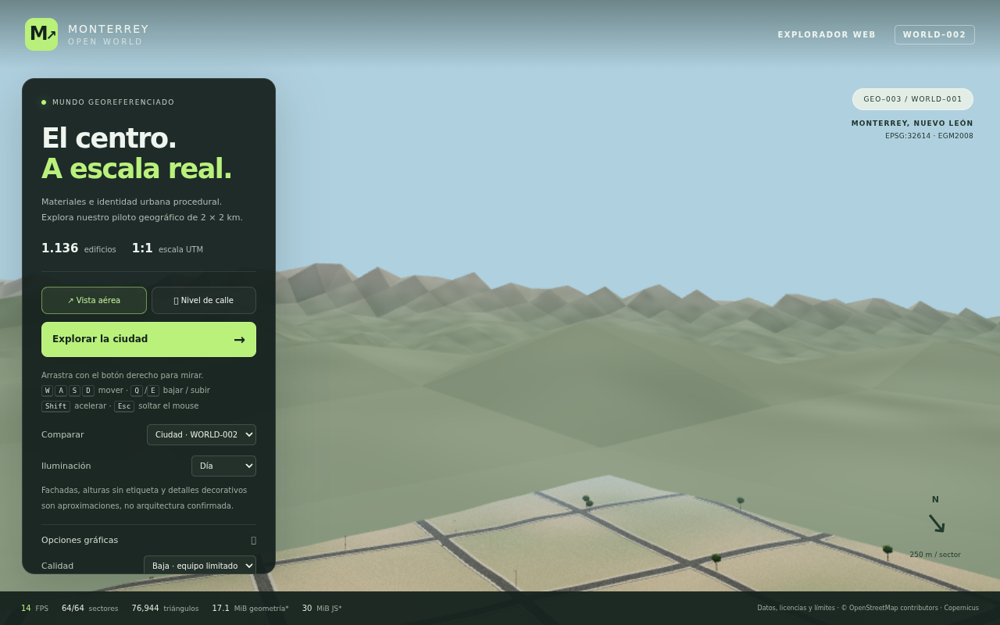
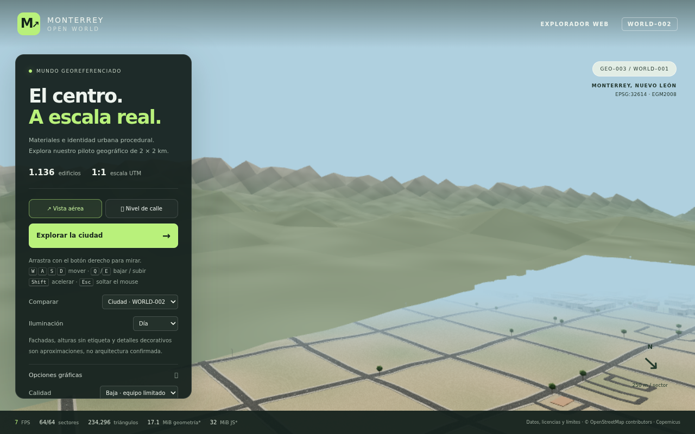
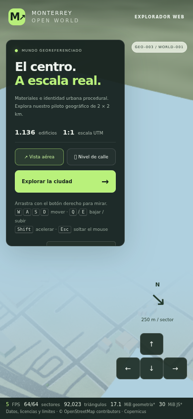

Chromium / ANGLE SwiftShader por software, 1280 × 800. Son capturas del navegador, sin imágenes generadas por IA. No son Unreal ni mediciones de una GPU de consumo. Fachadas, pintura y plantación adicional son propuestas visuales.
Pruebas y FPS · Conservación geométrica · Validación de fuentes









